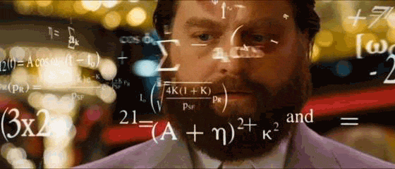
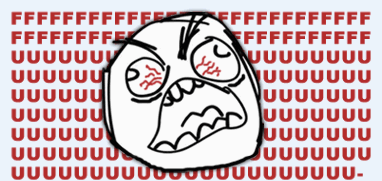
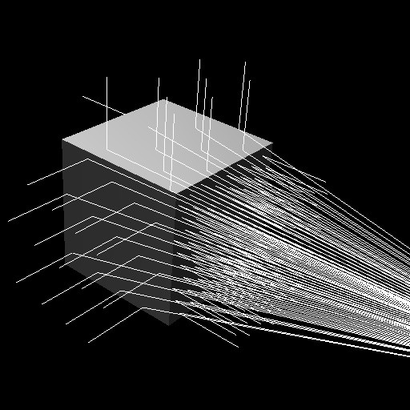

Jounral 2
What was hard/easy?
Ray-intersection (math side)!!


Gif's still relevant
What did you like/dislike?
Learning about ray-intersects was a little difficult (again even though it was hard I liked the challenge)
The video/visual representations of ray-intersects (i.e The unity games like the walking person with the ray pointing at nearby objects
and the spaceship avoiding meteors)
felt like it put it together for me

What was surprising or fun?
Homework was kind of hard my partner Jonathan and I struggled at first understanding the concept and problem at first
We went to Danny's office hours, which helped as he guided us on what formula we should use and visually explained it to us, but still not understanding 100% of it
Again, making this page was fun
What skills did you improve?
Navigating through folders, was easier since it's like last week and we just implented vector3.js to math folder
Still using atom; hopefully it's fine and I dont need to use VS?
Getting back into the groove of github and html/js
Still unsure how to access my page/homework assignment from git